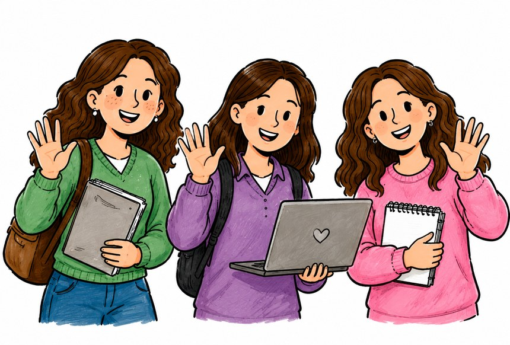

Donde nuestros caminos se cruzan
Tres recorridos muy distintos, contados con nuestra propia voz, que se cruzan en un mismo punto: aprender a enseñar con la tecnología, con sentido pedagógico y ético. Scrolleá para recorrer la línea de tiempo.

Línea de tiempo
Referencias
Carr, N. (2011). Superficiales: ¿Qué está haciendo Internet con nuestras mentes? Taurus.
De Pablos Pons, J. (2009). Historia de la tecnología educativa. En J. de Pablos Pons (Coord.), Tecnología educativa: La formación del profesorado en la era de Internet (pp. 95-115). Ediciones Aljibe.
Sancho Gil, J. M. (2009). La tecnología educativa en un mundo tecnologizado. En J. de Pablos Pons (Coord.), Tecnología educativa: La formación del profesorado en la era de Internet (pp. 45-68). Ediciones Aljibe.
Sigman, M., y Bilinkis, S. (2023). Artificial: La nueva inteligencia y el contorno de lo humano. Debate.